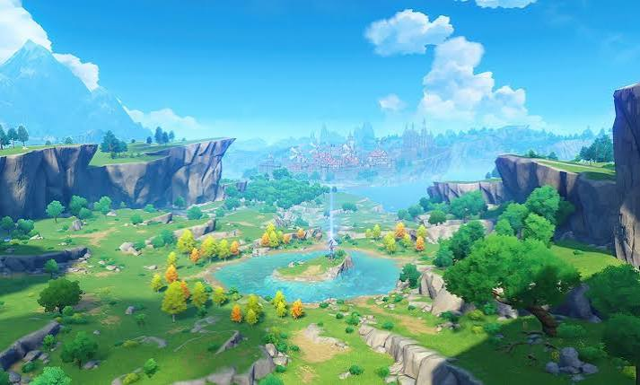
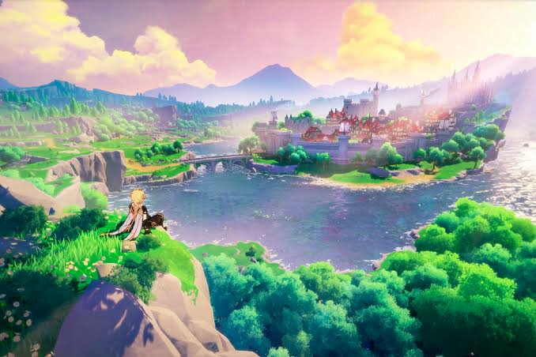
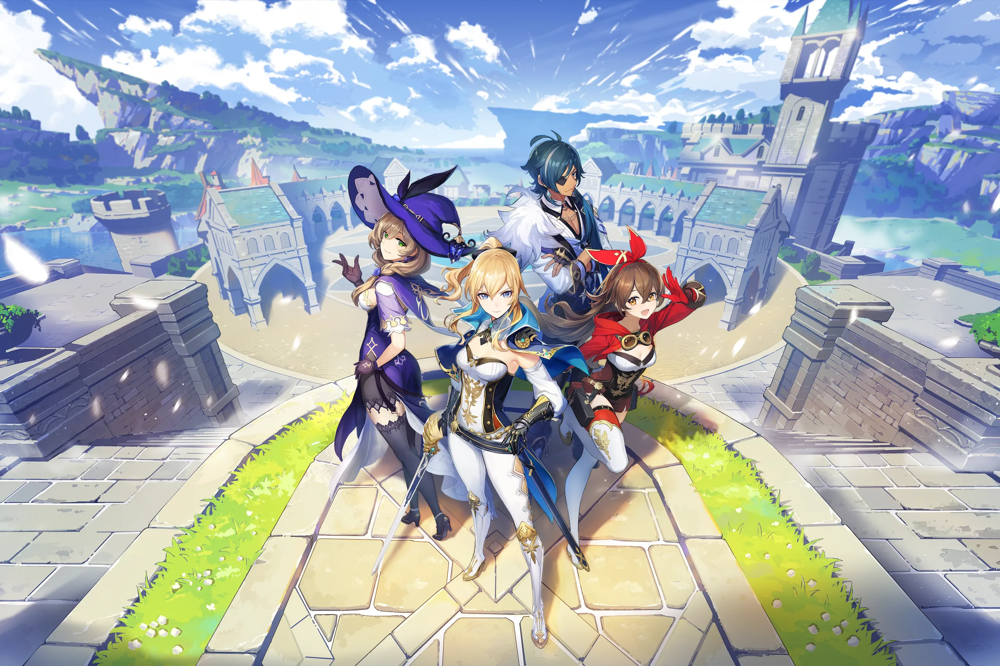
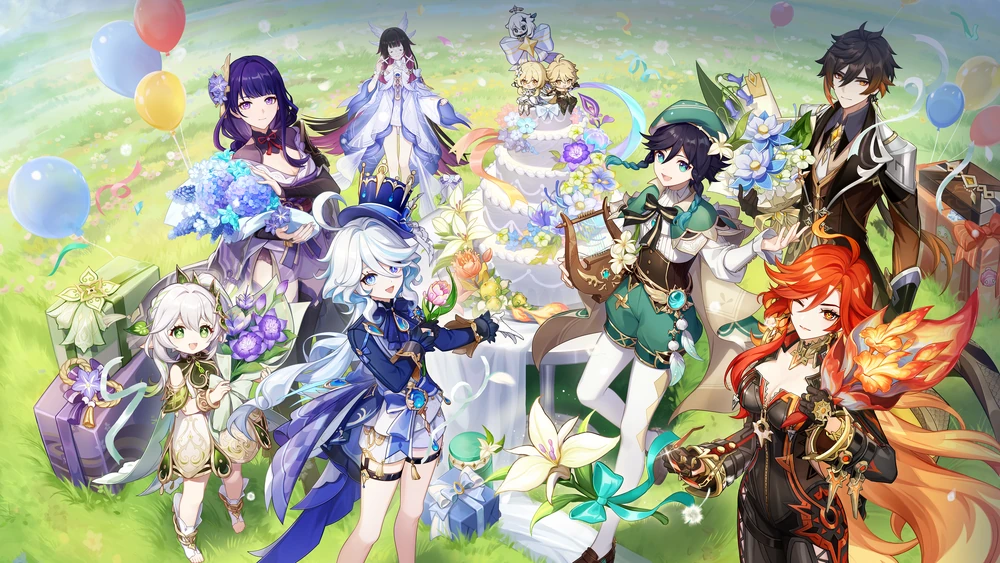
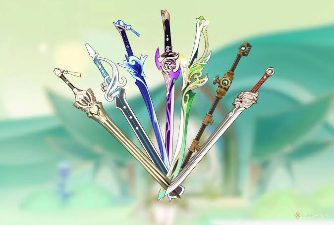
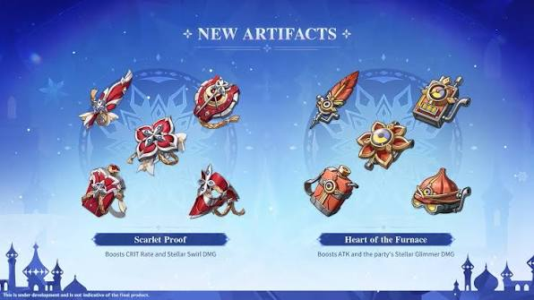
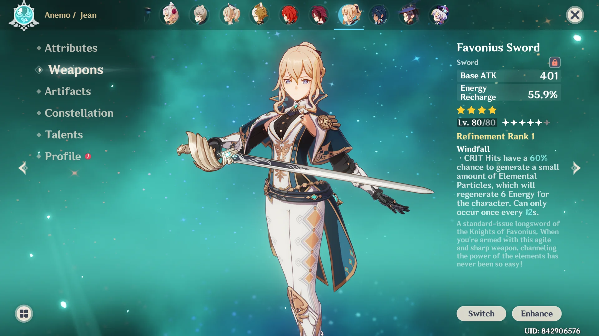
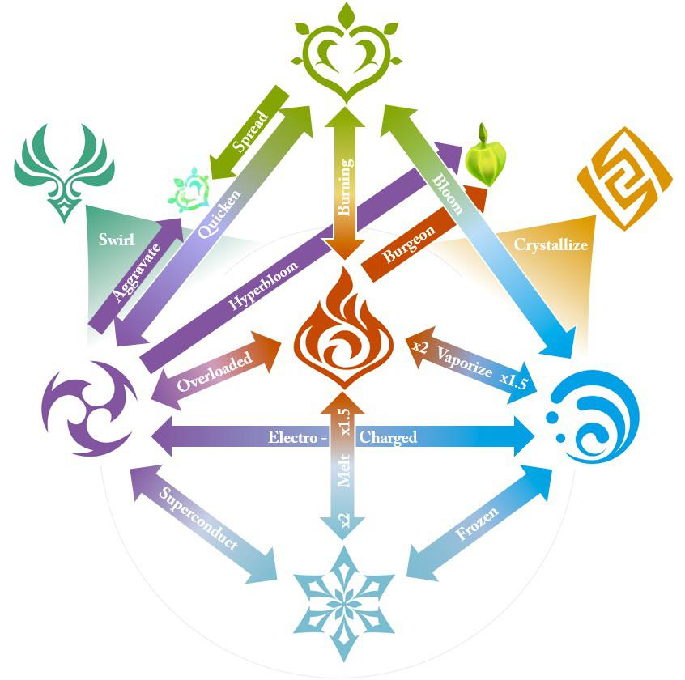

Explore
Discover regions, waypoints and chests.

Simple tips for exploring Teyvat and building characters.

Discover regions, waypoints and chests.

Complete quests to explore the story.

Upgrade character levels and talents.

Choose suitable weapons for your team.

Use artifacts to improve character stats.

Use Original Resin to collect rewards.

A basic character build includes a character level, weapon, talents and artifacts.

Vaporize: Hydro + Pyro
Melt: Cryo + Pyro
Bloom: Hydro + Dendro
Complete Archon Quests and reach the required Adventure Rank.
You can find chests, Primogems, achievements, quests and other rewards while exploring.
Use Character EXP materials and Mora to increase your character level.
Artifacts improve character stats and can provide useful set bonuses.